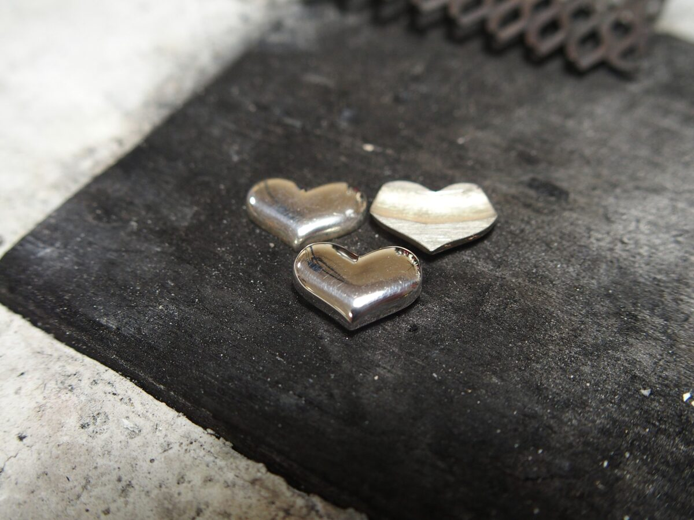
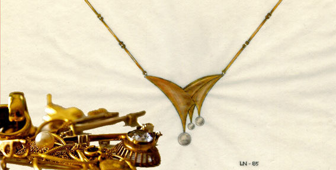
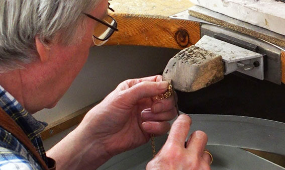
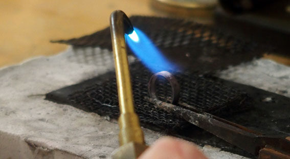
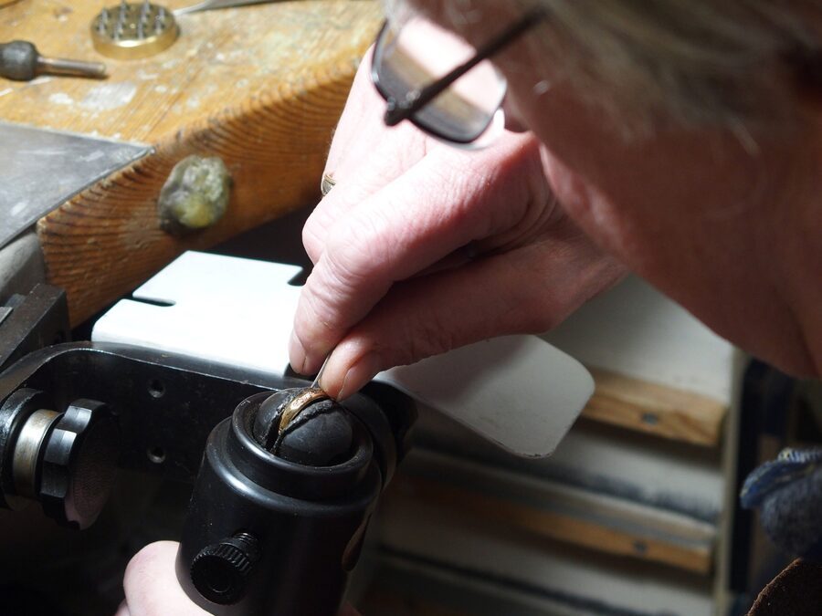
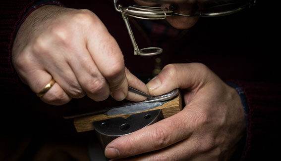
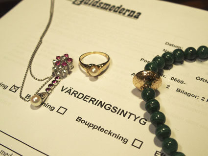
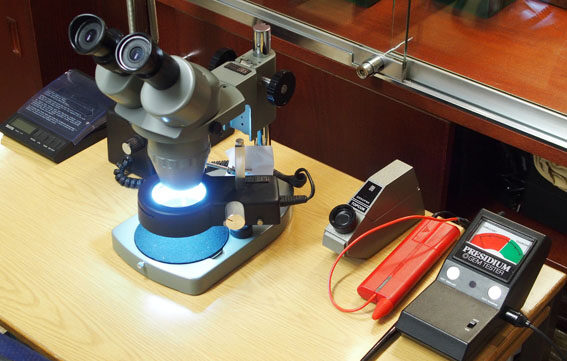
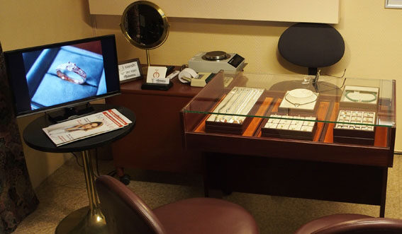

Nytillverkning
Utifrån dina egna idéer, eller våra. Vi hjälper gärna till att skissa fram förslag.
Nytillverkning, reparation, värdering och mycket mer, med personlig service av guldsmedsmästare Lars-Börje Nilsson.

Utifrån dina egna idéer, eller våra. Vi hjälper gärna till att skissa fram förslag.

Vi hjälper er att utifrån ett gammalt smycke bibehålla affektionsvärdet men ändå skapa ett personligt objekt. Ta tillvara delar av, eller metall, stenar och pärlor från smycken man tröttnat på.

Om oturen varit framme, eller ringen behöver ändras i storlek. Besök oss för konsultation, det mesta går att lösa.

Smycken slits vid användning. Ringskenor, krabbor till infattade stenar, öglor i armband, halsband, hängsmycken och örhängen behöver förr eller senare förstärkas eller bytas ut.

Vi fattar in stenar och pärlor i samtliga fattningstekniker.

Hos oss gör vi både hand- och maskingravyr av text, enstaka bokstäver, monogram, logotyp, sigill, vy eller mönstergravyr.

Vi har lång erfarenhet av värdering och värderar dina smycken, ädelstenar och pärlor för försäkring, delning eller eftervärdering i samband med förlust. Alltid med skriftligt värderingsintyg samt eventuellt foto av objekten.

Probering av metall för att fastställa innehåll och halt av ädelmetall. Undersökning av slipade stenar för bestämning av mineral samt pärlor avseende äkthet.

Av befintligt sortiment samt beställningsvaror och Själevadsskeden. Vi är även återförsäljare av Schalins of Sweden.
Konsultation angående ateljétjänster eller värderingar.